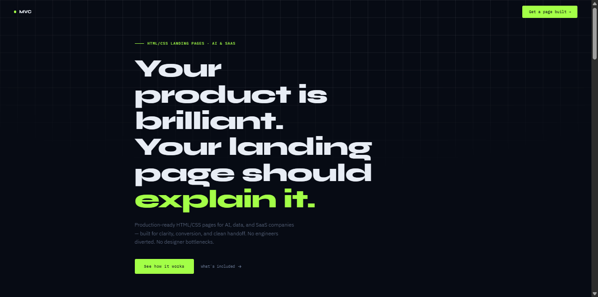

Technical Service Landing Page
Front-End Web Production Landing Page
Responsive HTML/CSS landing page designed to explain a technical service clearly, present the value of front-end production support, and guide technical teams toward contact or collaboration.
- Technical Landing Page
- Clear Technical Communication
- Responsive Design
- Contact CTA